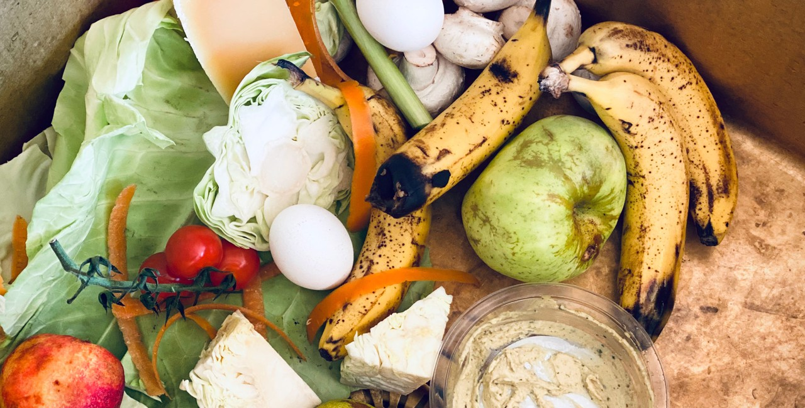
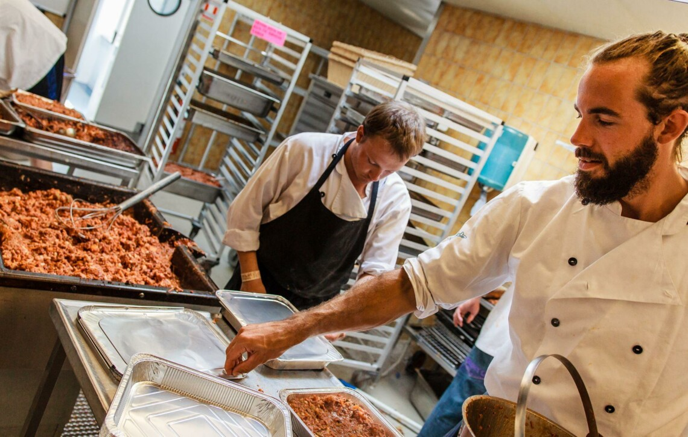

14 procent af verdens madspild sker i transporten, og det forventes,
at vi kan reducere udledningen af drivhusgasser i fødevaresektoren med 25 procent,
hvis vi inkluderer håndteringen af madspild i vores klimaplaner.
Men det gør politikerne ikke, skriver kandidatstuderende Emil Samuelsen i dette læserbrev.
1/3 af alle de fødevarer, der bliver produceret på verdensplan,
bliver smidt ud uden at blive spist.
Det er et stort problem, og derfor skal vi alle,
både virksomheder og forbrugere, forsøge at undgå madspild.


Hvad der svarer til 9.730 fyldte indkøbsvogne hver eneste dag.
Så meget mad smider vi årligt ud i Danmark. Det voldsomme spild har fået forbrugere,
fødevareproducenter, supermarkeder og restauranter til at gå ind i kampen mod madspild.